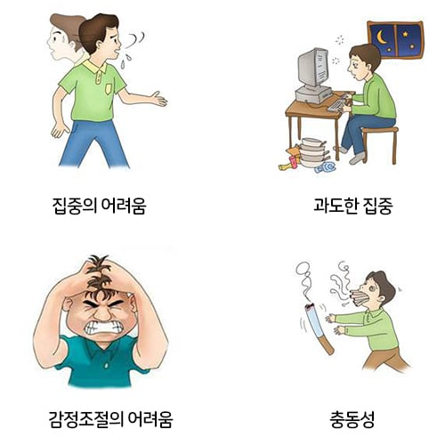

이 상황에서 일반인과 ADHD 환자가 다른게....
일반인: 뭐야 저 새끼는..? (그냥 무시함)

ADHD 환자: (오열하며) 아니 왜 나한테만 그래!!!
이런 느낌임 ㅇㅇ...
(현재 치료 12년차 + ADHD로 전시근로역 판정 받았음)
이 상황에서 일반인과 ADHD 환자가 다른게....
일반인: 뭐야 저 새끼는..? (그냥 무시함)

ADHD 환자: (오열하며) 아니 왜 나한테만 그래!!!
이런 느낌임 ㅇㅇ...
(현재 치료 12년차 + ADHD로 전시근로역 판정 받았음)
30짜리 검사를 급식 때 한번 받고 성인되고 한번 더 받은 뒤 약 먹고 있음 ㅋㅋㅋㅋㅋㅋㅋㅋㅋ
개붕아 너는 재능있는 사람인데 시대를 잘못 타고난거다
Adhd가 집중이 어렵지만 급변하고 어떤 변화를 알아차리는 능력이 좋다고 하더라 니가 만약 중세시대에 태어났으면 너는 전쟁터에서 적 장군을 찾을수도 있고 적군 정찰병이 올때 바로 발견할수있는 능력이 있었던거다
축구도 옛날시대에는 공놀이었을뿐 옛날시대에 메시가 태어나봐야 농사좀 더 잘짓는 농부일뿐이야
힘내라 개붕아
감사합니다... 그동안 악플 달린것 때문에 마음고생 심했습니다...
왤케 말 멋있게해?
추천줬다.
나 adhd인데 전혀 안그럼 뭐라하면 어쩌는거지 바로 생각남 학창시절 하도 혼나서 내성생김ㅇㅇ
쓰벌 나도 검사 한번 받고 싶은데 너모 귀차나
진짜 오열해?
Adhd 때문에 욕처먹었을때 반응 차이가 난다 생각함?
adhd 문제가 아니라 지능도 한 몫 하는듯
난 약 먹으니깐 조오오온나 성욕 올라서 7시간 동안 야동 보고 딸만 3번 치더라. 그래서ㅜ다른 약 먹으면 그냥 평소랑 같고 진짜 주옥 같음
단순히 adhd 증상이라기보단 adhd로 사회에서 부침을 많이 겪고 인간관계 스트에스에 내성이 약해진 상태신듯 하네요 힘내세요
이건 adhd때문은 맞는데 adhd의 증상은 아님 원래 되게 눈치 많이보고 주변의 평판을 신경쓰는 타입인데 adhd 자체 특성으로 "실제로 그렇게 눈치를 주는 사람을 남들보다 자주 만나게됨(타인보다 많이 주변에 관심을가지니까 확률상 그렇게됨)" , "자신이 이상하다는것을 자신이 제일민감하게암" 요렇게 되어서 만성화된거임. 이건 일단 남들이 그렇게 했을 때의 내마음 과 하지않았을때의 내마음을 스위치바꾸듯 왔다갔다하면서 상상해보는 작업이 필요해. 이러면 맨마지막에말한거처럼 극단적인생각같은게 좀 줄음 ....
또한 그런 마음을 일부러 먹어버리면 자기 제어가 좀 되기시작함... 어 개쫄아버릴거야 어 나한테만그래 어 난억까당해 이래버리면 오히려 증상이 좀줄어듦
진짜 adhd는 눈치 그만 봐라, 일 없으면 앉아서 쉬어라, 하나만 해라, 좀 쉬어가면서 해라 소리 들음
난 내향형 adhd라서 저런 일이 다 머릿속에서만 일어남. 남들이 보면 잘 모름.
힘내라. 온라인으로나마 응원할게.
우유 성분표 봤는데?
ADHD는 좀 감정 폭이 크다해야하나.
우울이나 분노 노여움같은 감정이 좀 쎄게와.
약먹었어서 약빨돌때랑 약빨 떨어졌을때랑 감정이 엄청 달라. 그냥 다른사람 같음
저건 adhd 아니어도 싸우지
adhd 어쩌고 다 가져다붙이네
근데 여기가 원출처인거 같은데 왜 본인얘기인척함?
https://m.ruliweb.com/community/board/300143/read/76997461
와 진짜네 작성자도 병이 좀 있네
직접 쓴 주작이거나, 동일인물이거나, AI로 원글 흉내 내게 시킨 거겠지
이것도 이거지만 줄타기하는 정치글댓도 역겨운데 커뮤 활동까지 AI까지 돌리는 거 최근에 보고 나니까 그냥 다 꼴보기 싫음
클리너도 다 돌렸으니 이 댓글만 남기고 탈퇴함
가지마세요
ai로부터 인간 커뮤니티를 지켜야죠ㅜ^ㅜ
저런 반응을 보이는 빈도는 일반인이나 adhd나 똑같다
ADHD를 뭔 정신병자로 만들어버리노; 특히 사람자체가 여유가 없고 속이 좁은걸 adhd라서 그런거에요라고 말하는거 좀 많이 이상해보임
어릴때 민폐짓이라는게 그냥 원래 그정도인 것도 있고 adhd인 경우도 있고 다른게 원인인 경우도 있고 다양해서
그것만 가지고는 판단하기 어려워요.